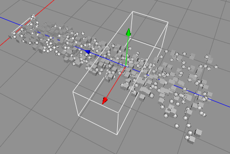

Turbulence Force effector objects produce a dynamic chaotic influence on particles. Creating the wake behind a speed boat or a plane passing through clouds. Multiple effector types can be used to create even more complex behavior.

Turbulence Force effector object used with a particle emitter to disturb a smooth particle flow.
Properties
- Strength: Strength of the force.
- Frequency: Frequency of the turbulence. The higher that value the more noisy the force.
- Size: The size of the range.
- Geometry: The shape of the range.
- Invert: Inverts the range.